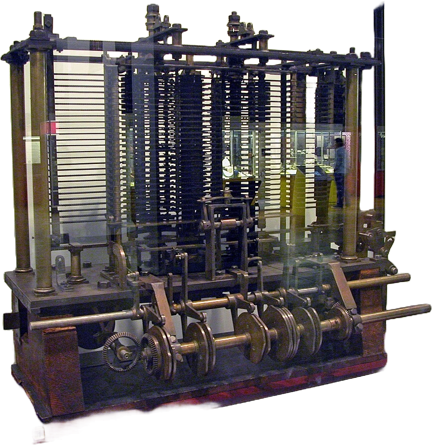
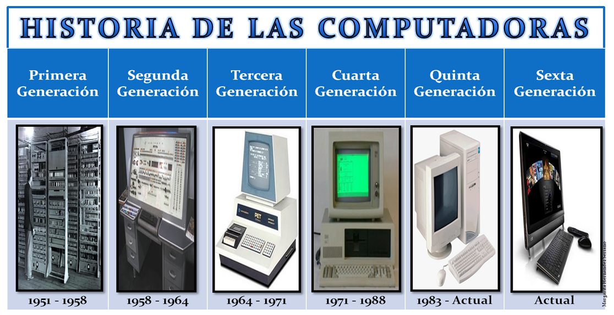
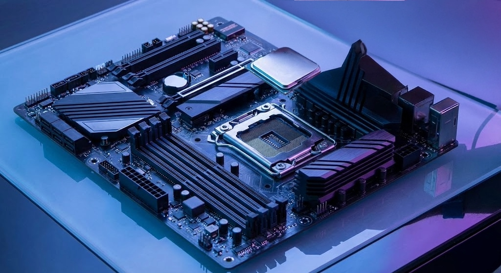

Hardware is the tangible infrastructure that makes every digital experience possible. While software defines instructions and user behavior, hardware provides the electrical pathways, memory cells, and computational units that execute those instructions at scale. From personal devices to cloud superclusters, the reliability and performance of modern systems are rooted in physical engineering decisions—materials, architecture, thermal design, and manufacturing precision.
Introduction: Hardware as the Physical Foundation
In computer science education, hardware is often introduced as a list of components: processor, memory, storage, and input/output devices. In professional practice, however, hardware is far more than a checklist. It is a layered ecosystem where transistors, buses, firmware, board-level layouts, and power distribution strategies cooperate to deliver predictable execution. Every software breakthrough—whether real-time collaboration, immersive rendering, or large-scale machine learning—depends on stable physical substrates designed for throughput, resilience, and energy efficiency.
Hardware also determines the practical boundaries of innovation. Latency constraints, thermal envelopes, and memory bandwidth shape what developers can build and how systems can scale. Understanding hardware foundations is therefore not optional for modern engineers; it is a strategic advantage that improves architecture decisions, performance optimization, and long-term platform planning.
Early Innovations: From the Abacus to Mechanical Engines
The history of hardware begins long before electricity. The abacus, developed in ancient civilizations, converted arithmetic into a structured physical interaction model: position, movement, and state representation. Its significance lies not only in manual calculation speed, but in the conceptual shift it introduced—information can be encoded and manipulated through physical artifacts. This principle remains central to all modern hardware design.
Centuries later, mechanical calculators and analytical machine concepts expanded this idea into programmable logic. Gear trains, levers, and rotating cylinders were engineered to represent deterministic operations. These systems established key notions that still define computing hardware today: modular components, instruction sequencing, and error propagation control. Even when these machines were limited by manufacturing tolerances, they proved that repeatable computation could be embedded into engineered mechanisms.

The analytical engine era is especially important because it reframed hardware as an architecture problem, not just a machine-building challenge. Designers began separating storage, processing, and control behavior, effectively sketching the same conceptual boundaries later formalized in electronic computer architecture. In this sense, early innovations were not primitive precursors—they were foundational models that translated mathematical intention into physical execution frameworks.
The Computer Revolution: Transistors, ICs, and the PC Era

The transition from vacuum tubes to transistors marked one of the most important inflection points in engineering history. Transistors reduced size, heat output, and power consumption while dramatically increasing reliability. This improvement unlocked new design possibilities, enabling more compact and maintainable systems. When integrated circuits grouped multiple transistors into single silicon packages, the industry gained exponential gains in density and repeatability.
Integrated circuits also changed the economics of hardware. Standardized fabrication processes made advanced components accessible beyond research institutions and military programs. As microelectronics matured, personal computers emerged as a practical platform for education, business, creativity, and communication. The PC era accelerated software ecosystems, networking, and user interface design because reliable and increasingly affordable hardware became available to millions of people.
Crucially, the revolution was not only about speed. It was about abstraction. Engineers could design complex systems using reusable logic blocks, buses, and memory hierarchies, making high-level architecture decisions without fabricating every primitive component manually. This abstraction culture still drives semiconductor and system-on-chip development today.
Modern Hardware: Microprocessors and Quantum Computing

Modern microprocessors are feats of extreme integration, containing billions of transistors in architectures optimized for parallelism, cache locality, branch prediction, and power-aware scheduling. Their performance comes from coordinated subsystems rather than clock speed alone: multi-level caches, vector instruction sets, dedicated accelerators, and memory controllers optimized for data movement. In practical workloads, this balance between compute and bandwidth determines whether platforms scale efficiently.
At the frontier, quantum computing introduces a fundamentally different model. Instead of binary bits, quantum systems operate with qubits that can represent superposed states and exploit entanglement. While still constrained by coherence times, error correction overhead, and specialized infrastructure, quantum hardware is already influencing cryptography research, optimization strategies, and scientific simulation pipelines. The current stage is hybrid: classical and quantum resources are increasingly treated as complementary rather than competing paradigms.
Looking ahead, hardware progress will likely be defined by heterogeneous design. General-purpose CPUs, GPUs, neural accelerators, edge AI chips, and quantum co-processors will coexist in orchestrated stacks. The professionals who understand hardware foundations will be better positioned to build software that is not only functional, but performant, efficient, and durable in production.